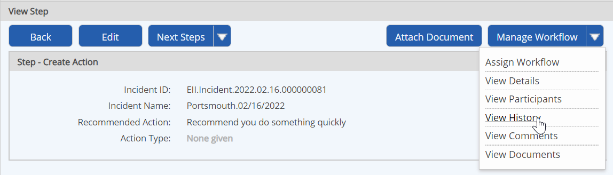
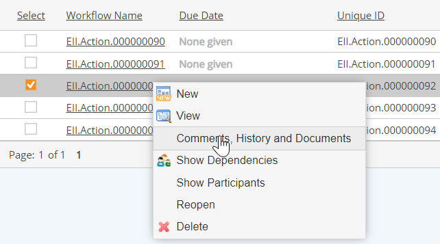

You can view workflow history from any workflow step form or from the Workflow Overview.
To view workflow history from the step form:
Select View History from the Manage Workflow button (from either view or edit mode).
The history of the workflow is shown, including all steps, the actions that were taken, and the user completing the step. Close the dialog when you are done to return to the step form.

To view history, you must have the View History permission, granted through any role you are a member of in the workflow, or have Manage Workflows right.
To view workflow history from Workflow Manager:
In Workflows Manager (Tasks and Workflows page), right click the workflow and choose Comments, History and Documents.

The Workflow Overview opens to the Comments, History and Documents tab.
To view workflow history from the Workflow Overview:
Select the Comments, History and Documents tab.
By default, the History button is selected. The workflow history includes all actions taken during the course of the workflow, as well as all comments that have been added.
To see this tab, you must have at least one of the following permissions: View Comments, View History or View Documents.